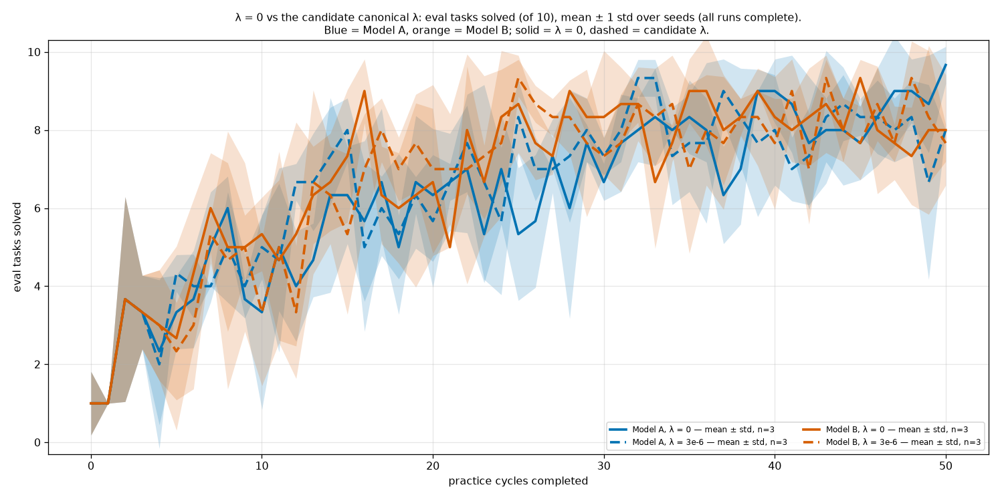
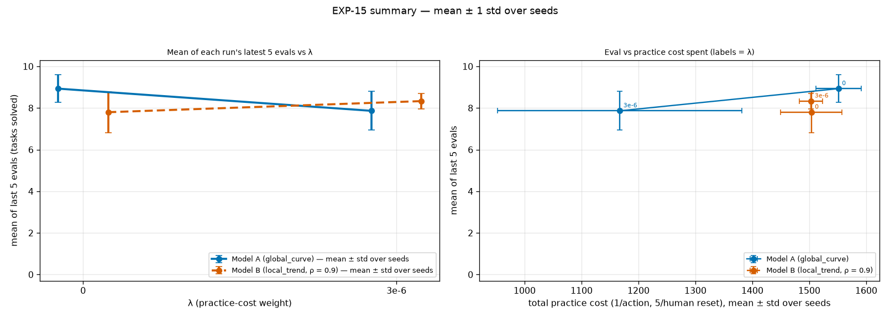
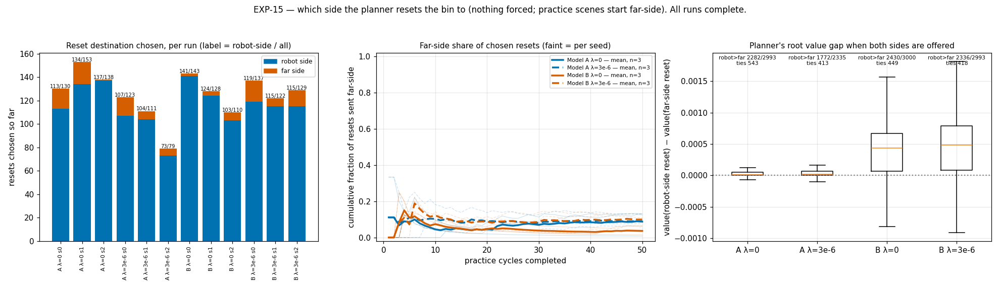
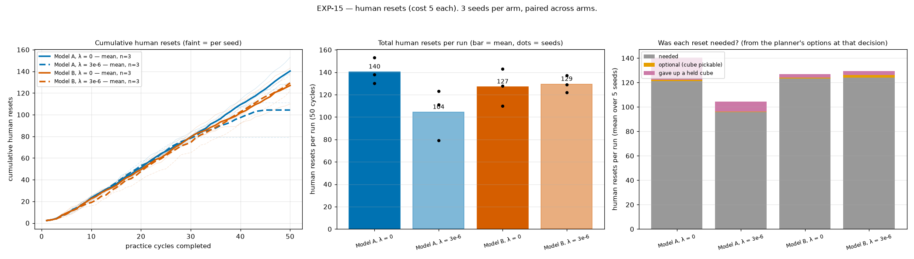
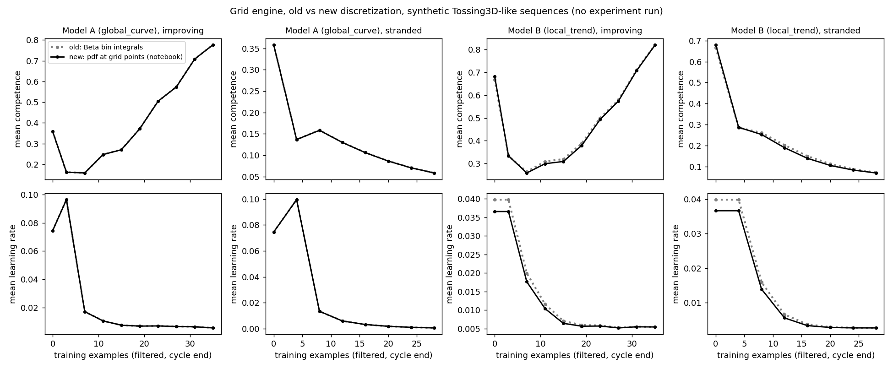
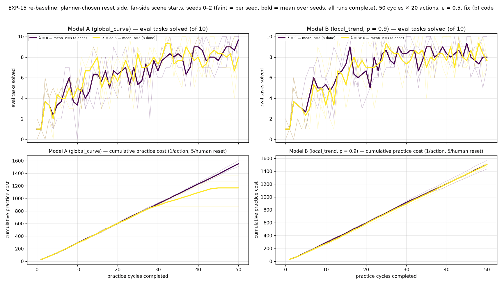

| Question | Do EXP-14's results hold on the final code, where the grid engine discretises exactly as Tom's notebook does (#378)? |
|---|---|
| Hypothesis | Pre-registered. #378 shifts Model B's competence estimate by up to 0.014 and Model A's by ≤ 0.0005, mostly in the prior, so EXP-14's conclusions hold: similar eval for A and B at λ = 0; λ = 3e-6 cuts Model A's practice cost with no detectable eval loss and leaves Model B unchanged; resets go predominantly to the robot side. Model B's early cycles may differ slightly. |
| Changes vs EXP-14 | Draft PR #378: the grid engine evaluates densities at grid points (notebook-exact) instead of integrating over bins. Nothing else changed. |
| Arms | {Model A, Model B} × λ ∈ {0, 3e-6}, seeds 0–2 (paired); 50 cycles × 20 actions, ε = 0.5, grid engine, human reset cost 5, non-ε evidence, far-side practice start, planner-chosen reset side. Code 4d045c1f, pinned checkout hitl-pmp-runs-4d045c1f. |
| Results TL;DR | Mostly holds, with low power (3 seeds, paired; the smallest possible Wilcoxon p at n = 3 is 0.25, so read the directions, not significance). Mean of the last 5 evals: Model A 8.93 (λ = 0) → 7.87 (3e-6), −1.07, t p = 0.34; Model B 7.80 → 8.33, +0.53, t p = 0.46. λ = 3e-6 again cuts Model A's practice cost (−384, lower on 3/3 seeds, t p = 0.13) and human resets (−36, 3/3 lower), and leaves Model B unchanged (cost −0.3, t p = 0.99). At λ = 0, Model B is 1.13 below Model A (t p = 0.41; no detectable difference), whereas in EXP-14 it was 0.56 above — on the same seeds, Model B's λ = 0 last-5 mean fell from 8.87 (EXP-14) to 7.80, which may be #378's prior shift (Model B moved up to 0.014) or run-to-run divergence; with n = 3, not resolved. Model A λ = 3e-6 again stops practising in late cycles (seed 2 raced ahead), and the 'gave up a held cube' resets remain (Model A ~18/run at λ = 0, ~8 at 3e-6; Model B 2–4) — #378 does not touch the OpenGripper clock. |
| Status | Done (19:48) — 12/12 runs finished, 0 failures. |
EXP-15 practice videos — all 12 runs
All practice cycles per run, replayed from the state log at 4x (GPU-encoded). Resets are labelled with the side the planner chose. Clips are also linked from each run's practice chart.
videos-exp15/global_curve-lam0-s0/all-50-practice-cycles.mp4videos-exp15/global_curve-lam0-s0/index.htmlvideos-exp15/global_curve-lam0-s1/all-50-practice-cycles.mp4videos-exp15/global_curve-lam0-s1/index.htmlvideos-exp15/global_curve-lam0-s2/all-50-practice-cycles.mp4videos-exp15/global_curve-lam0-s2/index.htmlvideos-exp15/global_curve-lam3e-6-s0/all-50-practice-cycles.mp4videos-exp15/global_curve-lam3e-6-s0/index.htmlvideos-exp15/global_curve-lam3e-6-s1/all-50-practice-cycles.mp4videos-exp15/global_curve-lam3e-6-s1/index.htmlvideos-exp15/global_curve-lam3e-6-s2/all-50-practice-cycles.mp4videos-exp15/global_curve-lam3e-6-s2/index.htmlvideos-exp15/local_trend-lam0-s0/all-50-practice-cycles.mp4videos-exp15/local_trend-lam0-s0/index.htmlvideos-exp15/local_trend-lam0-s1/all-50-practice-cycles.mp4videos-exp15/local_trend-lam0-s1/index.htmlvideos-exp15/local_trend-lam0-s2/all-50-practice-cycles.mp4videos-exp15/local_trend-lam0-s2/index.htmlvideos-exp15/local_trend-lam3e-6-s0/all-50-practice-cycles.mp4videos-exp15/local_trend-lam3e-6-s0/index.htmlvideos-exp15/local_trend-lam3e-6-s1/all-50-practice-cycles.mp4videos-exp15/local_trend-lam3e-6-s1/index.htmlvideos-exp15/local_trend-lam3e-6-s2/all-50-practice-cycles.mp4videos-exp15/local_trend-lam3e-6-s2/index.htmlEXP-15 results
Full page with per-seed table: exp15-rebaseline/index.html.


Eval per cycle, mean ± 1 std over 3 seeds, all four arms

Mean of the last 5 evals and practice cost

Reset destination chosen by the planner

Human resets

What #378 changes: grid discretisation, old (bin-integrated) vs new (notebook-exact point evaluation)EXP-15 cumulative counts (interactive)
Cumulative skill attempts and successes, reset destinations, unneeded resets, and null vs non-null practice cycles, per practice cycle (faint = seeds).
cumulative/exp15.htmlEXP-15 interactive practice charts — all 12 runs
One page per run: every practice action as a box (Pick/Toss/Reset H/Open, S/F, ▼ = ε-random toss, gold = ≥2 consecutive Pick→Toss pairs, reset boxes show the chosen bin side). Click any box to open that cycle's video at that action. Unneeded resets (the planner could have tossed a held cube or picked the cube, from its root options) have a thick red border and a hover reason.
practice-charts/exp15/index.htmlCommitted with this log
The figures and clips from this experiment that are committed to the repository (PNGs downscaled to ≤ 300 KB).


EXP-15 eval and cumulative practice cost per cycleEXP-15 reset destination chosen by the plannerEXP-15 human resetsWhat #378 changes: grid discretisation, old (bin-integrated) vs new (notebook-exact point evaluation)